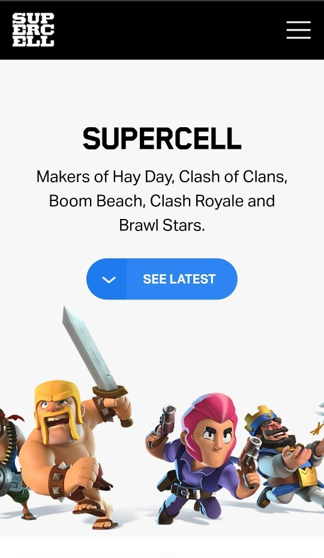
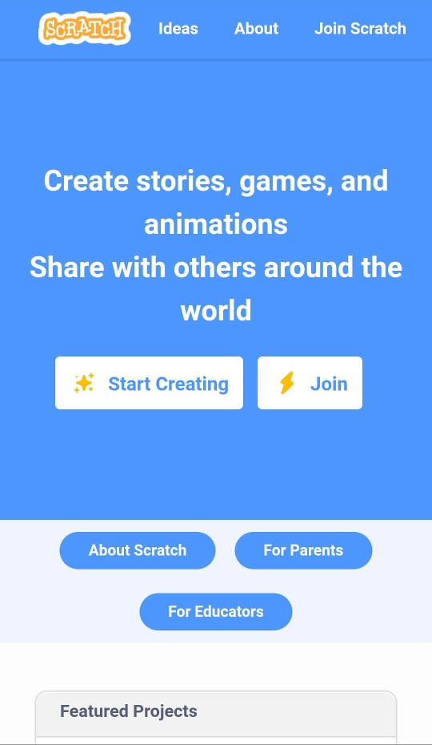

PARC: Alignment
Supercell
supercell.com The header of supercell.com has two objects following centered vertical alignment. After that, there is a heading, a smaller heading, and a button. These objects are horizontally aligned across the center of the page.
PARC: Repetition
Scratch Foundation
scratch.mit.edu The page repeatedly uses the same font and the same light blue, white, and occasionally yellow colors. In light blue backgrounds, the text is white and the buttons are white with blue text. In white backgrounds, the text is gray, the links are blue and the buttons are blue with white text.
Hick' Law
Chess.com
www.chess.comHick's Law states that the more choices users face, the longer it will take them to make a decision. That is why the choices presented to a user must be short and simple. Chess.com does not overwhelm us with too much options. The first, obvious options we perceive are pressing either of the two play buttons. Then, there are other choices like pressing the register or log in button, and pressing the menu icon to search for more options.